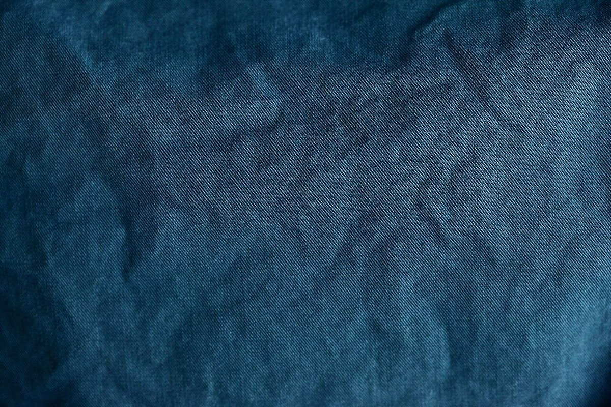
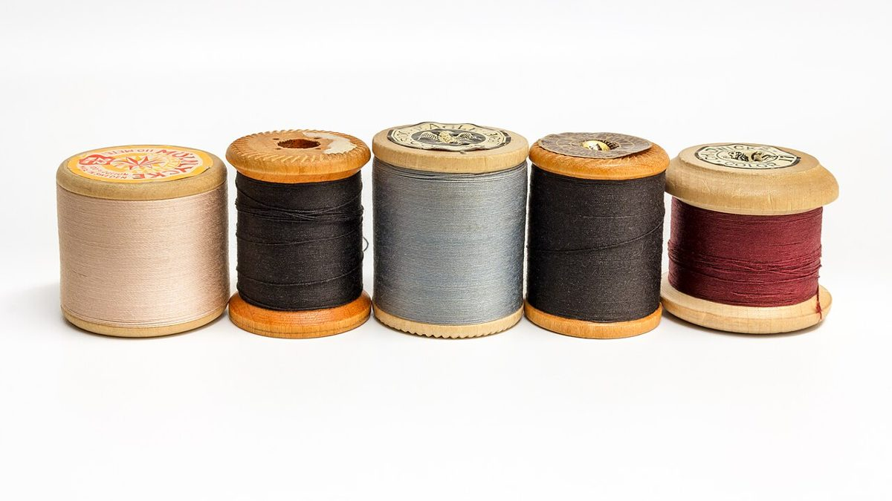
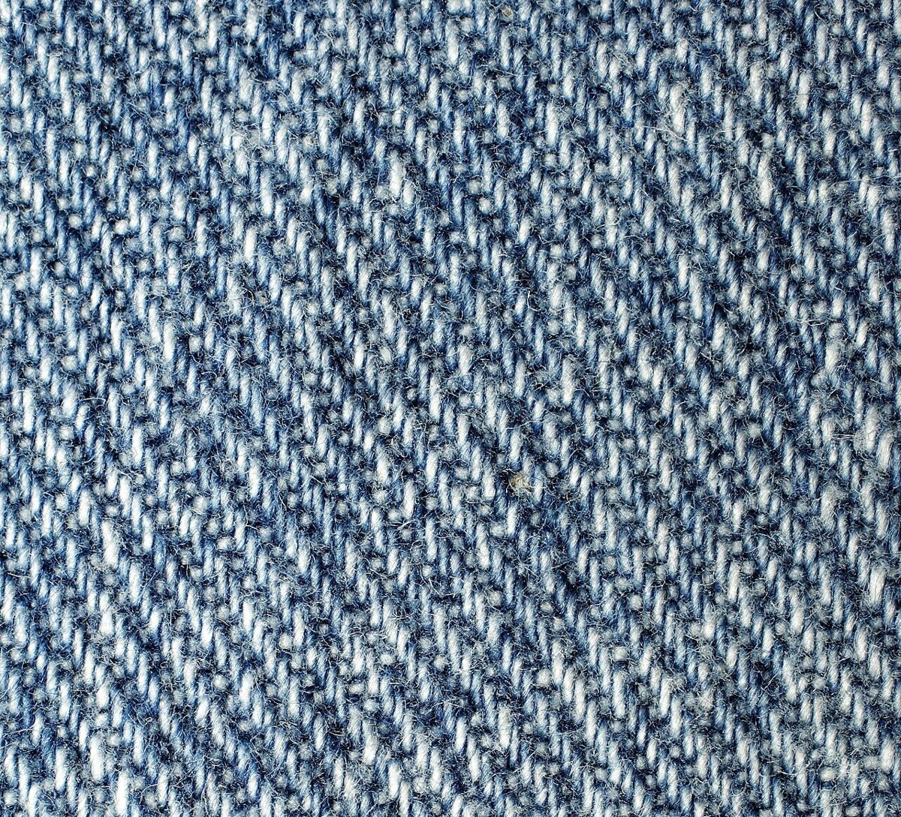

eeee

ふたつ並ぶカップ。

カフェ / 〒847-0021 佐賀県唐津市松南町２−７６−４
「geecoffee」のご案内ページです。営業時間やメニューなど詳しいことは準備中。まずはInstagramをのぞいてみてください。
制作側の連想
店名の由来は分かりません。制作側は、geecoffee という綴りに同じ文字が二つずつ並ぶところが三組(ee・ff・ee)あることに気づき、ジーンズの縫い目によくある「二本並んだステッチ」を連想しました(gee を「ジー」と読んだ連想も含みます)。そこでこのページは、デニムの藍と糸のオレンジで、ふたご文字を一組ずつ縫い留める作りにしています。制作側の連想で、お店の理念・由来とは無関係です。
三組のふたご文字
写真は唐津市のお店の様子ではありません。文字の「ふたつ」から連想して選んだ、国外・撮影地不明のフリー素材です。
ふたつ並ぶカップ。

ふたつの糸巻きのように、並べて。

ふたすじ走る、藍の綾目。
ご案内
| 所在地 | 〒847-0021 佐賀県唐津市松南町２−７６−４ |
|---|---|
| 電話 | 0955-58-7376 |
| 営業時間 | 準備中 |
| 定休日 | 準備中 |
| ご予約 | 準備中 |
| 駐車場 | 準備中 |
| SNS | Instagram @_geecoffee |